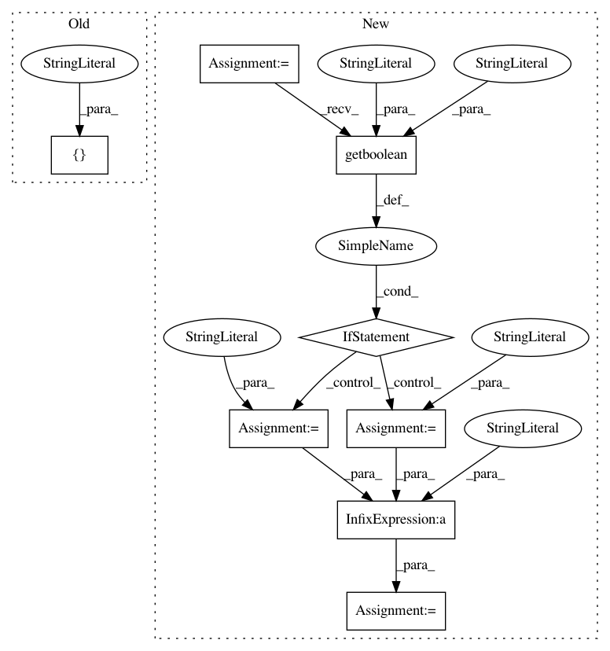

dc12fb43b73c641012b53ffcba80a1f4987ba9cc,GPy/kern/parts/linear.py,Linear,dpsi2_dmuS,#Linear#Any#Any#Any#Any#Any#Any#,182
Before Change
"extra_link_args" : ["-lgomp"]}
N,num_inducing,input_dim = mu.shape[0],Z.shape[0],mu.shape[1]
weave.inline(code, support_code=support_code, libraries=["gomp"],
arg_names=["N","num_inducing","input_dim","mu","AZZA","AZZA_2","target_mu","target_S","dL_dpsi2"],
type_converters=weave.converters.blitz,**weave_options)
After Change
//target_S_dummy += (dL_dpsi2[:, :, :, None] * self.ZA[None, :, None, :] * self.ZA[None, None, :, :]).sum(1).sum(1)
if config.getboolean("parallel", "openmp"):
pragma_string = "//pragma omp parallel for private(m,mm,q,qq,factor,tmp)"
else:
pragma_string = ""
//Using weave, we can exploiut the symmetry of this problem:
code =
int n, m, mm,q,qq;
double factor,tmp;
%s
for(n=0;n<N;n++){
for(m=0;m<num_inducing;m++){
for(mm=0;mm<=m;mm++){
//add in a factor of 2 for the off-diagonal terms (and then count them only once)
if(m==mm)
factor = dL_dpsi2(n,m,mm);
else
factor = 2.0*dL_dpsi2(n,m,mm);
for(q=0;q<input_dim;q++){
//take the dot product of mu[n,:] and AZZA[:,m,mm,q] TODO: blas!
tmp = 0.0;
for(qq=0;qq<input_dim;qq++){
tmp += mu(n,qq)*AZZA(qq,m,mm,q);
}
target_mu(n,q) += factor*tmp;
target_S(n,q) += factor*AZZA_2(q,m,mm,q);
}
}
}
}
% pragma_string
N,num_inducing,input_dim = int(mu.shape[0]),int(Z.shape[0]),int(mu.shape[1])
weave.inline(code, support_code=self.weave_support_code,
In pattern: SUPERPATTERN
Frequency: 4
Non-data size: 8
Instances
Project Name: SheffieldML/GPy
Commit Name: dc12fb43b73c641012b53ffcba80a1f4987ba9cc
Time: 2013-10-15
Author: nicolo.fusi@gmail.com
File Name: GPy/kern/parts/linear.py
Class Name: Linear
Method Name: dpsi2_dmuS
Project Name: SheffieldML/GPy
Commit Name: dc12fb43b73c641012b53ffcba80a1f4987ba9cc
Time: 2013-10-15
Author: nicolo.fusi@gmail.com
File Name: GPy/kern/parts/rbf.py
Class Name: RBF
Method Name: weave_psi2
Project Name: SheffieldML/GPy
Commit Name: dc12fb43b73c641012b53ffcba80a1f4987ba9cc
Time: 2013-10-15
Author: nicolo.fusi@gmail.com
File Name: GPy/kern/parts/rbf_inv.py
Class Name: RBFInv
Method Name: weave_psi2
Project Name: SheffieldML/GPy
Commit Name: dc12fb43b73c641012b53ffcba80a1f4987ba9cc
Time: 2013-10-15
Author: nicolo.fusi@gmail.com
File Name: GPy/kern/parts/linear.py
Class Name: Linear
Method Name: dpsi2_dZ